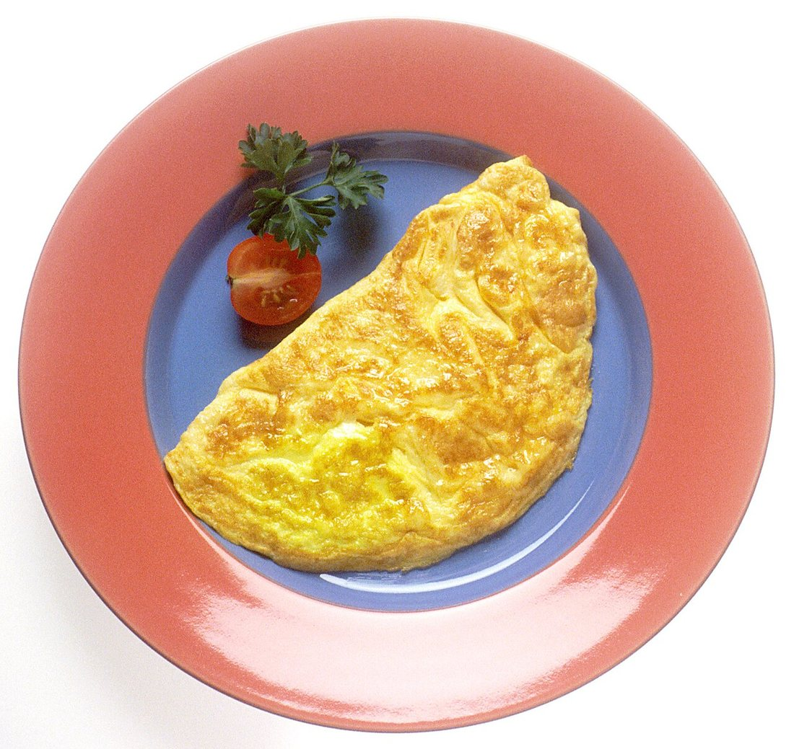
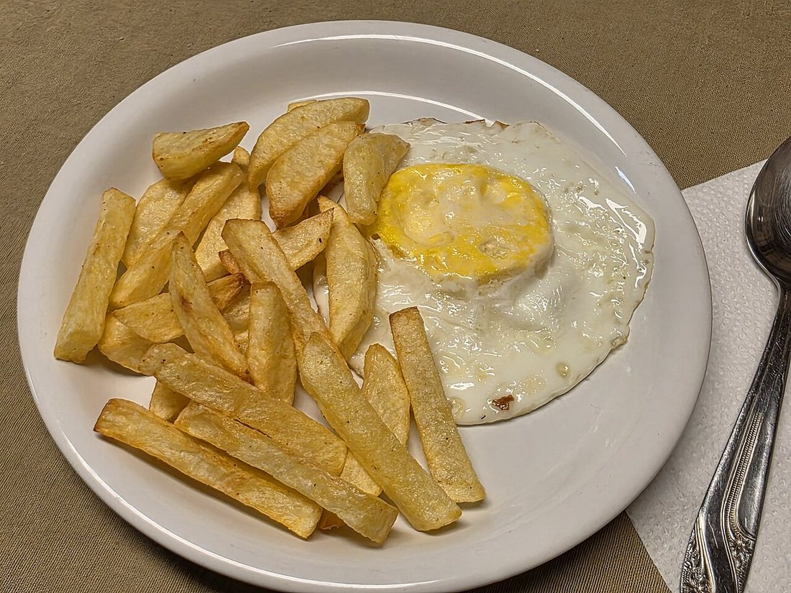
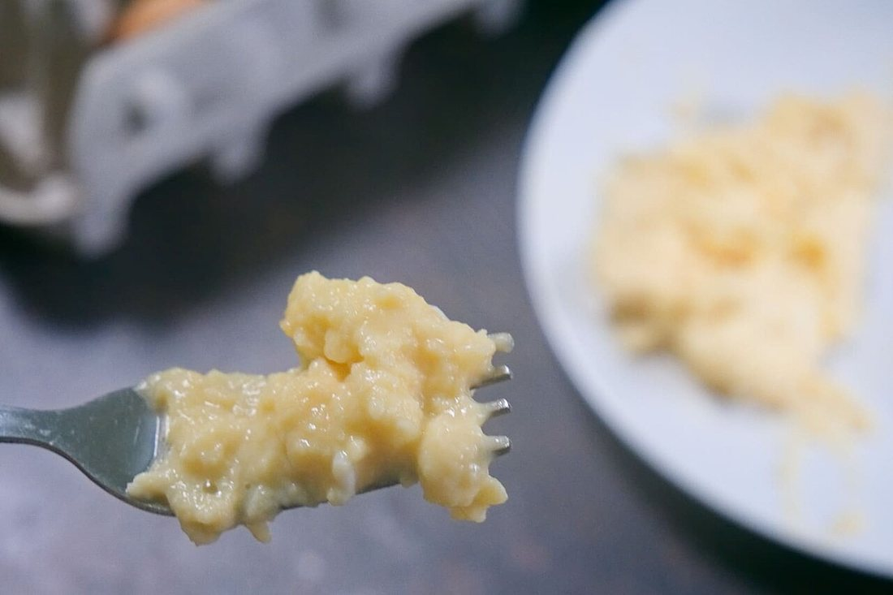
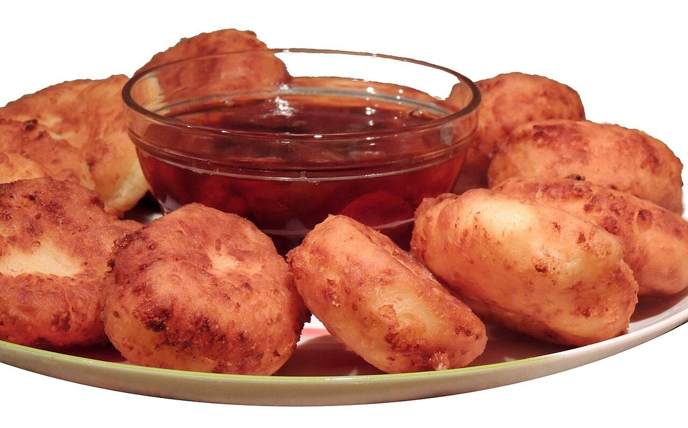
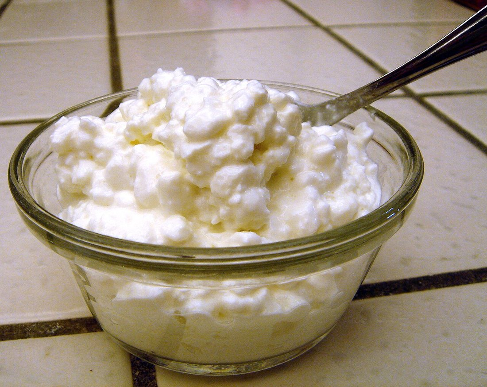
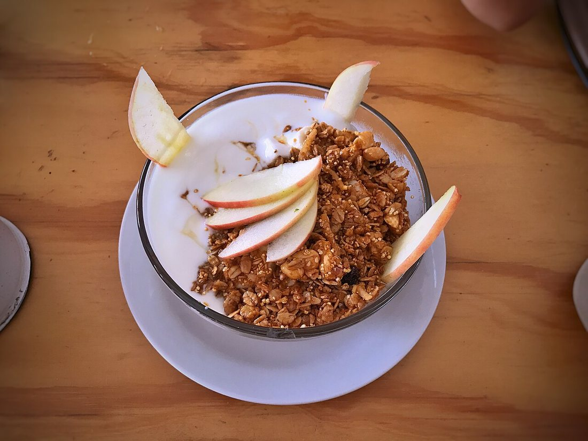
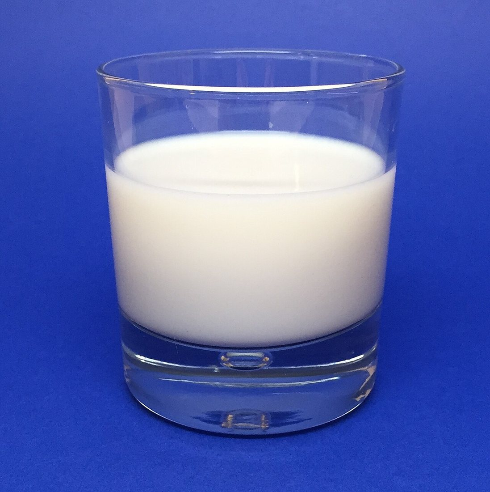

Көркем еңбек · 4-бөлім · Тағамтану Art & Craft · Section 4 · Cooking Художественный труд · Раздел 4 · Кулинария
🥚 Жұмыртқа мен сүт тағамдарынан жасалатын тағамдар
🥚 Dishes from Eggs & Dairy Products
🥚 Блюда из яиц и молочных продуктов
Қол жетімді әрі құнды өнімдер: ақуыз, кальций және күн сайынғы дәмді тағамдар. Affordable and valuable foods: protein, calcium and tasty everyday dishes. Доступные и ценные продукты: белок, кальций и вкусные блюда каждый день.
Жұмыртқа мен сүт өнімдері — адам тағамындағы ең құнды әрі қол жетімді өнімдердің бірі. Жұмыртқа толыққанды ақуызға, дәрумендерге (A, D, B тобы) және темірге бай; сүт пен оның өнімдері кальций мен ақуыздың басты көзі — олар сүйек пен тіске қажет. Бұл өнімдерден таңғы ас та, түскі ас та, десерт те жасауға болады: қуырылған жұмыртқа, омлет, сырник, ботқа, ірімшік. Бастысы — өнімнің балғындығы, дұрыс сақталуы және жеткілікті термиялық өңделуі: бұл дәмді әрі қауіпсіз тамақтың кепілі. Eggs and dairy products are among the most valuable and affordable foods in the human diet. Eggs are rich in complete protein, vitamins (A, D, the B group) and iron; milk and its products are a key source of calcium and protein, needed for bones and teeth. From these foods you can make breakfast, lunch or dessert: fried eggs, omelette, cottage-cheese pancakes, porridge, cheese. What matters most is the freshness of the product, correct storage and proper cooking: that is the key to tasty and safe food. Яйца и молочные продукты — одни из самых ценных и доступных продуктов в питании человека. Яйца богаты полноценным белком, витаминами (A, D, группы B) и железом; молоко и его продукты — главный источник кальция и белка, нужных для костей и зубов. Из этих продуктов можно приготовить и завтрак, и обед, и десерт: яичницу, омлет, сырники, кашу, сыр. Главное — свежесть продукта, правильное хранение и достаточная тепловая обработка: это залог вкусной и безопасной еды.
1. Жұмыртқа тағамдары1. Egg Dishes1. Блюда из яиц
Жұмыртқа туралы қысқашаEggs in briefКоротко о яйце
- •Құрамы:Parts:Строение: қабық, ақуыз (белок) және уыз (сарыуыз). Сарыуызда — майлар мен дәрумендер.shell, the white and the yolk. The yolk holds the fats and vitamins.скорлупа, белок и желток. В желтке — жиры и витамины.
- •Пайдасы:Benefit:Польза: толыққанды ақуыз, A, D, E, B дәрумендері, темір.complete protein, vitamins A, D, E, B, and iron.полноценный белок, витамины A, D, E, B и железо.
- •Қалай дайындайды:How cooked:Как готовят: пісіреді, қуырады, омлет жасайды, қамырға қосады.boiled, fried, made into omelette, added to dough.варят, жарят, делают омлет, добавляют в тесто.
- •Маңызды:Important:Важно: шикі жұмыртқаны жуып, жақсы пісіру керек — сальмонелладан сақтану үшін.wash raw eggs and cook them well — to avoid salmonella.сырые яйца мыть и хорошо проваривать — для защиты от сальмонеллы.
💧 Балғындықты қалай тексереміз?How to check freshness?Как проверить свежесть?
Жұмыртқаны суы бар ыдысқа салыңыз: балғыны түбіне жатады, ескісі қалқып шығады.Put the egg in a bowl of water: a fresh egg sinks and lies flat, a stale one floats up.Опустите яйцо в воду: свежее тонет и лежит на дне, несвежее всплывает.
🔍 Үлкейту үшін суретті басыңыз. 🔍 Tap a photo to enlarge. 🔍 Нажмите на фото, чтобы увеличить.



Жұмыртқаны қайнатудан кейін пісіру уақыты Egg Boiling Times (after the water boils) Время варки яиц (после закипания)
| Способ | Время | Результат и применение |
|---|---|---|
| Всмятку | 2–3 мин | Белок схватился, желток жидкий. Едят ложкой из подставки, на завтрак. |
| «В мешочек» | 4–5 мин | Белок плотный, желток мягкий, тягучий. Для салатов, бутербродов, супов. |
| Вкрутую | 8–10 мин | Белок и желток полностью твёрдые. Для салатов, начинок, как закуска. |
| Омлет / болтунья | 3–5 мин | Жарят на сковороде. Яйца можно взбить с молоком для пышности. |
⚠️ После варки яйца обдают холодной водой — так легче чистить и желток не темнеет.
| Тәсілі | Уақыты | Нәтижесі мен қолданысы |
|---|---|---|
| Жұмсақ | 2–3 мин | Ағы ұйыды, уызы сұйық. Тұғырдан қасықпен жейді, таңғы асқа. |
| «Қалташа» | 4–5 мин | Ағы тығыз, уызы жұмсақ, созылмалы. Салат, бутерброд, сорпаға. |
| Қатты | 8–10 мин | Ағы мен уызы толық қатты. Салат, ішкі қосынды, тіскебасарға. |
| Омлет / шайқалған | 3–5 мин | Табада қуырады. Қопсытуға жұмыртқаны сүтпен шайқауға болады. |
⚠️ Пісірген соң жұмыртқаны суық сумен шаяды — тазалау оңай, уызы қарайамайды.
| Method | Time | Result & use |
|---|---|---|
| Soft-boiled | 2–3 min | White set, yolk runny. Eaten with a spoon from a cup, for breakfast. |
| Medium | 4–5 min | Firm white, soft, sticky yolk. For salads, sandwiches, soups. |
| Hard-boiled | 8–10 min | White and yolk fully firm. For salads, fillings, as a snack. |
| Omelette / scrambled | 3–5 min | Fried in a pan. Eggs may be whisked with milk for fluffiness. |
⚠️ After boiling, rinse the eggs in cold water — easier to peel and the yolk stays bright.
2. Сүт өнімдері мен тағамдары2. Dairy Products & Dishes2. Молочные продукты и блюда
Сүттен көптеген өнім жасалады. Ашыту (қою) арқылы айран, қатық, ірімшік, ал қаймағынан май мен сметана алынады. Бұл өнімдер кальцийге бай әрі ас қорытуға пайдалы. Many products are made from milk. By fermenting it we get kefir, yogurt and cottage cheese, and from its cream come butter and sour cream. These products are rich in calcium and good for digestion. Из молока делают множество продуктов. Путём сквашивания получают кефир, йогурт, творог, а из сливок — масло и сметану. Эти продукты богаты кальцием и полезны для пищеварения.
негізгі өнімthe base productосновной продукт
ашытуданfrom fermentingиз сквашивания
ашыған сүтsoured milkкисломолочные
қаймағынанfrom creamиз сливок
қаймақsoured creamиз сливок
піскен өнімa ripened productзрелый продукт
🔍 Сүт өнімдерінен жасалған тағамдар — басып үлкейтіңіз: 🔍 Dishes made from dairy — tap to enlarge: 🔍 Блюда из молочных продуктов — нажмите, чтобы увеличить:




Сақтау және қауіпсіздік Storage & Safety Хранение и безопасность
❄️ ТоңазытқыштаIn the fridgeВ холодильнике
Жұмыртқа мен сүт өнімдерін салқында (+2…+6 °C) сақтаңыз.Keep eggs and dairy cold (+2…+6 °C).Храните яйца и молочное в холоде (+2…+6 °C).
📅 Мерзіміне қараңызCheck the dateСмотрите срок
Жарамдылық мерзімі өткен өнімді жемеңіз.Do not eat products past their use-by date.Не ешьте продукты с истёкшим сроком.
🔥 Жақсы пісіріңізCook wellГотовьте тщательно
Жұмыртқаны толық пісіріңіз; сүтті қайнатыңыз.Cook eggs through; boil the milk.Яйца проваривайте; молоко кипятите.
🧼 ТазалықCleanlinessЧистота
Шикі жұмыртқадан кейін қол мен ыдысты жуыңыз.Wash hands and dishes after handling raw eggs.Мойте руки и посуду после сырых яиц.
💬 Есте сақтаңыз 💬 Remember 💬 Запомните
Жұмыртқа мен сүт өнімдері — ақуыз бен кальцийдің арзан әрі құнды көзі. Олардан жылдам да, мерекелік те тағам жасауға болады: омлет, сырник, ботқа, ірімшік. Үш қарапайым ереже есте болсын: балғын өнім ал, дұрыс сақта, жақсы пісір — сонда тамағың әрі дәмді, әрі қауіпсіз болады. Eggs and dairy products are a cheap and valuable source of protein and calcium. From them you can make both quick and festive dishes: omelette, syrniki, porridge, cheese. Remember three simple rules: choose fresh products, store them correctly, cook them well — and your food will be both tasty and safe. Яйца и молочные продукты — дешёвый и ценный источник белка и кальция. Из них можно приготовить и быстрые, и праздничные блюда: омлет, сырники, кашу, сыр. Запомните три простых правила: выбирай свежее, храни правильно, готовь тщательно — и еда будет вкусной и безопасной.